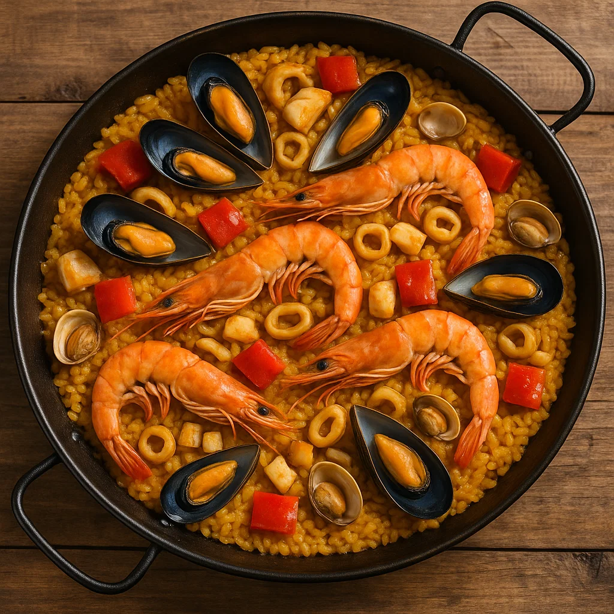

Paella
El arroz más emblemático de Valencia. La paella combina mariscos, pollo, conejo, verduras y azafrán en un festín de color y sazón.
- Origen: Valencia
- Características: arroz, mariscos, pollo, conejo, verduras, azafrán
- Curiosidad: el recipiente en el que se cocina, la paella, también le da nombre al platillo.
